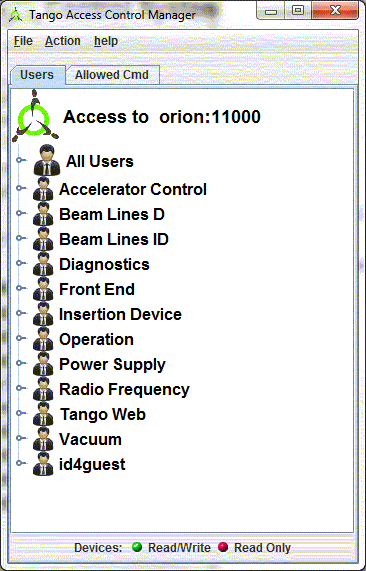
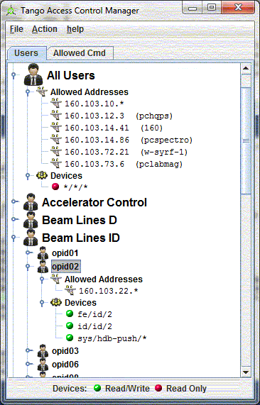
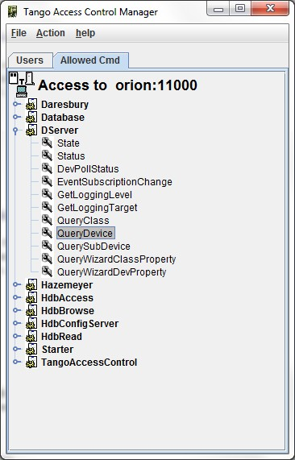

Tango Access Control (TAC) Configuration¶
TANGO provides an access control (see kernel documentation chapter Advanced Features)
TAC Configuration Tool:¶
Astor provides a tool to configure it. This tool is reserved to the TANGO administrator and needs a password to be opened.

Configure TAC by IP address and user:¶
User list is displayed in a tree under groups.
To configure you can Add/Remove a user and its group.
And define this user rights.
|  |
|
Configure TAC for allowed commands:¶
|  | The access control allows Write access or Read Only access. The Read Only access means:
Some commands could be a simple read action. For instance on Dserver class, the command QueryDevice does not write anything and returns the device list. This class is needed to establish a connection between a client and a device, and it is useful even if user is in read only access. This tool provide a list of allowed commands for a specified class. You can add or reove class by a right click menu. |